Home / History
Since 1946Our History
The founders, the story of the school and every principal who has led it.
The people who started it all
Dr. C. W. W. Kannangara
Father of Free Education. The school was founded under his education-for-villages scheme in 1946.
David Wanigasekara
Supported the founding of the school as a Buddhist school for the village.
Ven. Naranda Thero
Of Wajiraramaya, Bambalapitiya, who helped found the school.
H. L. Wimalasooriya
First principal (1946 – 1948), from Gnanodaya Maha Vidyalaya, Kalutara. Pioneer teachers D. H. Wickramasekara and U. A. Podinona taught with him.
From a thatched hut to a national school
Classes begin at Telijjawila junction in a small coconut-thatched building, with nearly 200 students and three teachers. The pioneer teachers were D. H. Wickramasekara and U. A. Podinona, and the first principal was H. L. Wimalasuriya from Gnanodaya Maha Vidyalaya, Kalutara.
Wickramaratne Walawwa serves as the boys' hostel and Samarasinghe Walawwa in Bibugodella watta as the girls' hostel. Lessons are taught in English until 1956.
The school moves to its present home on the hillock at Udukawa, with an assembly hall, classrooms, administrative blocks, craft rooms and two hostel blocks.
Prime Minister Sir John Kotelawala formally declares the school open, during the time of principal R. B. Gallella.
Thelijjawila Central College is declared a national school.
Over 2,500 students and 130 teachers, with four houses: Rohana, Thissa, Anura and Vijitha.
Principals since 1946
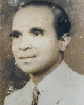
H. L. Wimalasooriya- Edmond Dias Gunarathne
- M. A. de Silva
- G. Tanthirigoda (acting)
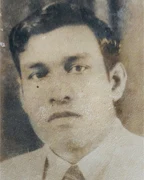
H. L. Rathnapala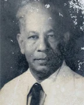
D. A. Wedage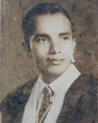
R. B. Gallella- L. H. P. De Silva
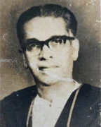
U. A. F. Dharmasiri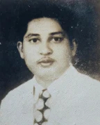
N. G. K. Samarasekara- R. A. Mathos
- N. A. Gunadasa
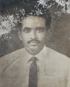
C. K. Waidyarathna- P. V. P. Wickramasingha
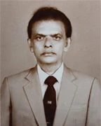
M. K. Sirisena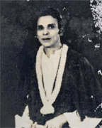
N. Jayawardana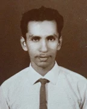
J. P. P. Jayaweera- A. Gamage
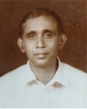
I. Wijewantha- W. Chittananda
- P. V. P. Wickramasingha
- Cyril T. Gunawardana
- Rohana Deraniyagala
- Wimal Vidanapathirana
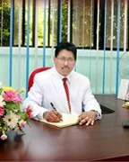
Jayantha Meegoda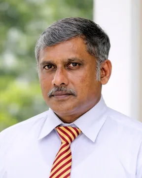
J. Uyangoda